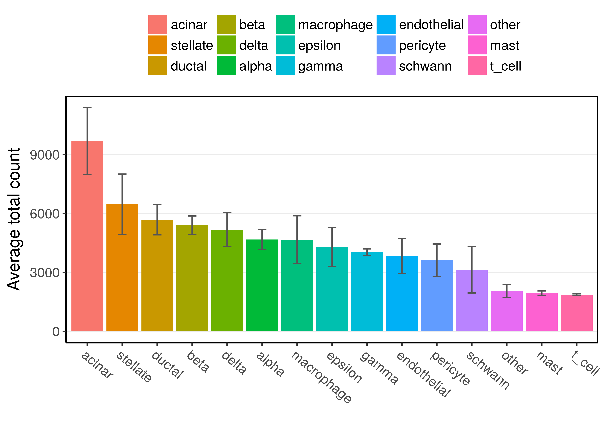
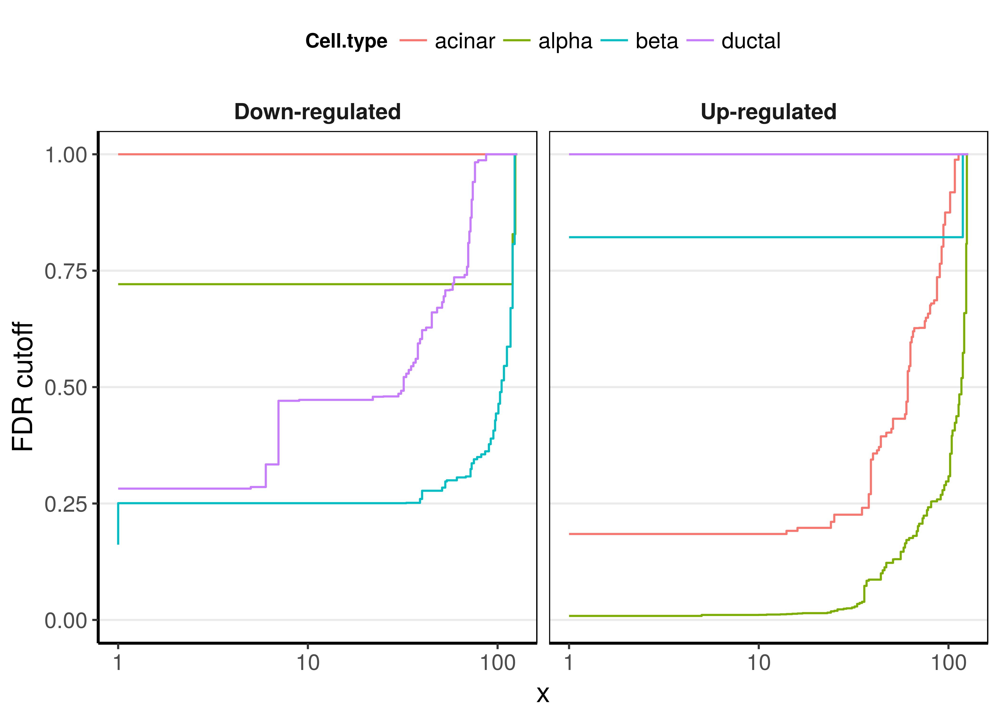
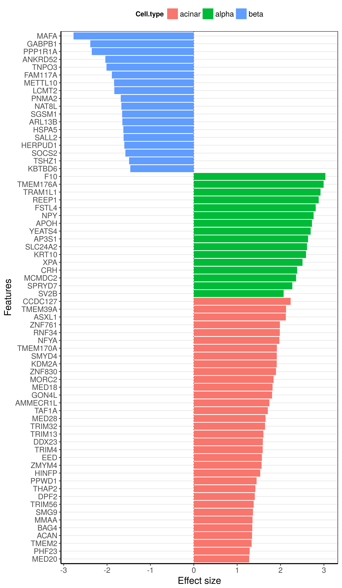

Abstract
This vignette provides a walk through tutorial on how to use Bseq-sc to estimate cell type proportions from bulk sequencing data based on prior single cell data, and integrate them into a cell type-specific differential analysis. It serves as a companion document to the analysis performed in the original publication (Baron et al. 2016 – Cell Systems).
r BSEQSC
When using this work in any way, please cite the following work:
A single-cell transcriptomic map of the human and mouse pancreas reveals inter- and intra-cell population structure
M. Baron, A. Veres, S.L. Wolock, A. L. Faust, R. Gaujoux, A. Vetere, J. Hyoje Ryu, B. K. Wagner, S. Shen-Orr, A. M. Klein, D. A. Melton, I. Yanai
Cell Systems. 2016 Oct 26 10.1016/j.cels.2016.08.011
In order to run the entire deconvolution pipeline, users need to install the bseqsc R package from GitHub. See the installtion instructions for details.
BSEQ-sc uses two types of input data:
Single cell RNA-seq information is used to deconvolve bulk RNA-seq samples by estimating the cell-type proportion of key cell-types. Statistical deconvolution is then used to leverage the variation in cell type frequencies between individuals to estimate average cell-type specific expression in 2 groups of individuals and to compute cell type-specific differential expression.
We used this approach to investigate gene expression differences between diabetics and healthy individuals, using single cell RNA-seq data obtained from an independent set of pancreatic islets (Figure 1). However, it is applicable to other type of tissue, for which both bulk and single cell gene expression data are available.
We reproduce here the analysis detailed in (Baron et al. 2016).
Bioconductor base package provides the ExpressionSet class, which is a convenient data structure to hold expression data along with sample/feature annotation. Here we use two ExpressionSet objects to handle the bulk and single cell data respectively.
The dataset’s GEO entry (GSE50244) contains raw RNA-seq and sample annotation data. For the purpose of this vignette, we will use data that we pre-processed and made available on the data download page.
After pre-processing, the data were filtered to remove unmapped tags, or tags that mapped to pseudogenes, or known ribosomal/mithocondrial genes (list available in file data/genes_mitrib.txt.gz or via function getMITRIB() provided in the package). Moreover, counts from transcripts that mapped to a same gene were averaged. Sample phenotypic annotations were also processed to define glycemic groups based on hba1c measurements, as per the original publication (Fadista et al. 2014).
# download GEO dataset from Github
eset <- readRDS('http://shenorrlab.github.io/BSeq-sc/data/GSE50244.rds')# for this analysis we only look at samples with hba1c data
eset <- droplevels(eset[, !is.na(eset$hba1c)])
eset## ExpressionSet (storageMode: lockedEnvironment)
## assayData: 17921 features, 70 samples
## element names: exprs
## protocolData: none
## phenoData
## sampleNames: GSM1216753 GSM1216755 ... GSM1216834 (70 total)
## varLabels: geo_accession tissue ... ageN (11 total)
## varMetadata: labelDescription
## featureData
## featureNames: A1BG A1CF ... ZAK (17921 total)
## fvarLabels: Gene0 ENTREZID Symbol Description
## fvarMetadata: labelDescription
## experimentData: use 'experimentData(object)'
## Annotation:We generated single cell RNA-seq data of pancreatic islets from 3 healthy individuals, which provided gene expression profiles for 17434 genes in 7729 cells. The raw counts for these data are available on the data download page, in the form of an ExpressionSet:
eislet <- readRDS('http://shenorrlab.github.io/BSeq-sc/data/islet-eset.rds')
eisletAfter identification of the cell types by clustering, we extract marker genes for each cell type, i.e. sets of genes that are mostly highly expressed in each cell type, which can be done in multiple ways, see for example details in (Baron et al. 2016).
The bseqsc package provides the list of selected marker genes for the pancreatic islets, stored in data object pancreasMarkers:
data(pancreasMarkers)
str(pancreasMarkers)## List of 6
## $ alpha : chr [1:14] "GCG" "TTR" "IRX2" "SLC7A2" ...
## $ beta : chr [1:7] "INS" "IAPP" "IGF2" "DLK1" ...
## $ delta : chr [1:5] "SST" "LEPR" "RBP4" "RGS2" ...
## $ gamma : chr [1:6] "PPY" "STMN2" "ARX" "MEIS2" ...
## $ ductal: chr [1:11] "KRT19" "TACSTD2" "ANXA2" "S100A10" ...
## $ acinar: chr [1:19] "CTRB1" "CELA3A" "CELA3B" "CTRB2" ...Once cell type-specific markers have been identified, we build a reference basis matrix from their single cell gene expression, which we use to infer the composition of bulk tissue samples from their total gene expression.
The purpose of this matrix is to provide reference expression profiles that together discriminate the cell types of interest. We compute it by averaging, within each cell type, the gene expression of each marker gene across all the cells in the cell type.
Notably, the computation is performed on scaled single cell count data, to better reflect cell type-specific variations in average transcript counts. Indeed, looking at the average counts within each cell type shows how cell types have varying levels of RNA transcripts:
# average counts computed within each cell type in each sample
plotCellTotals(eislet, 'cellType', 'sampleID')
Because we want the basis matrix of reference profiles to reflect these biological differences, we use these average counts to re-scale the CPM data before computing the average gene expression.
B <- bseqsc_basis(eislet, pancreasMarkers, clusters = 'cellType', samples = 'sampleID', ct.scale = TRUE)The resulting basis matrix should show a clear cell type-specific expression pattern (Figure 2):
plotBasis(B, pancreasMarkers, Colv = NA, Rowv = NA, layout = '_', col = 'Blues')Figure 2: Basis matrix of gene expression reference profiles from pancreatic cell type derived from single cell RNA-seq data.
Cell type proportions are estimated using CIBERSORT, a method that was developed to investigate immune infiltrating landscape in tumour tissue (Newman et al. 2015; Gentles et al. 2015) (See section Requirements for setup instructions).
fit <- bseqsc_proportions(eset, B, verbose = TRUE)
## * Data features: 'A1BG', 'A1CF', ..., 'ZAK' (17,921 total)
## * Basis features: 'GCG', 'TTR', ..., 'CPB1' (62 total)
## * Common features: 'ADCYAP1', 'ANXA2', ..., 'TTR' (60 total)
## * Writing input files ...
## OK
## * Running CIBERSORT ...
## OKTo facilitate plotting and model fitting in downstream analysis, we add the estimated proportions as extra phenotypic variables to the ExpressionSet:
pData(eset) <- cbind(pData(eset), t(coef(fit)))Figure 3: Estimated cell type proportions in each Normoglycemic (blue) and hyperglycemic (red) individuals.
Now that we have estimates for the main cell types, we can use EdgeR to derive a set of genes that are likely to be differentially regulated at the cell type level.
To do so, we fit 2 models of gene expression differences between HBA1C groups (IGT, Diabetic, Normal): * a base model only includes the HBA1C group variable, as well as gender and age covariates; * an extended model that additionally includes the proportions of alpha, beta, ductal and acinar cells.
Genes that are likely to be differentially regulated at the cell type level are those whose p-values improve (i.e. decrease) when adjusting for cell type proportions (red dots on Figure 4). Here we used a p-value threshold of 0.01.
To fit these models we use the utility function fitEdgeR included in the package:
fitEdgeR## function(x, formula, coef){
## design <- model.matrix(formula, data = pData(x))
## esetA <- x[, rownames(design)]
## y <- DGEList(counts = exprs(esetA), genes = fData(esetA))
## y <- calcNormFactors(y)
## y <- estimateDisp(y, design)
## fit <- glmQLFit(y, design)
## qlf <- glmQLFTest(fit, coef = coef)
## top <- topTags(qlf, n = Inf)
## top$fit <- fit
## top
##
## }
## <environment: namespace:bseqsc># base
fit_edger <- fitEdgeR(eset, ~ gender + ageN + hba1c_class, coef = c('hba1c_classIGT', 'hba1c_classDiabetic'))
# extended
fit_edger_ext <- fitEdgeR(eset, ~ gender + ageN + alpha + beta + ductal + acinar + hba1c_class
, coef = c('hba1c_classIGT', 'hba1c_classDiabetic'))We then visualize
# gather P-values from both models
edger_pvals <- cbind(fit_edger$table[, 'Symbol', drop = FALSE], Base = fit_edger$table$PValue
, Adjusted = fit_edger_ext$table$PValue[match(fit_edger$table$Symbol, fit_edger_ext$table$Symbol)]
, stringsAsFactors = FALSE)
edger_pvals <- mutate(edger_pvals, Regulated = Adjusted <= 0.01 & Adjusted <= Base)
# plot Base vs Adjusted
pvalueScatter(Base ~ Adjusted, edger_pvals, pval.th = 0.01, label.th = 3.5)Figure 4: P-values comparison between the 2 EdgeR modesl: Base model (y-axis) and extended model (x-axis).
Now, we run a cell type-specific differential analysis using csSAM (S. S. Shen-Orr et al. 2010), on the subset of selected genes, to which we add a set of 6 ER stress-related genes, that were identified in the single cell data analysis (see details in (Baron et al. 2016)).
csSAM fits a linear model that estimates interaction terms between cell proportions and a group variable. This imposes a constraint on the sample size within each group. For this reason we only inlude into the model the 4 cell types (alpha, beta, ductal and acinar cells), either due to their variation (Figure 3) or biological relevance.
# ER genes
genes_ER <- c('HSPA5', 'MAFA', 'HERPUD1', 'DDIT3', 'UCN3', 'NEUROD1')
# Fit on ER stress genes and genes regulated beyond cell type proportion differences
genes <- union(genes_ER, subset(edger_pvals, Regulated)$Symbol)
# NB: we fix seed for reproducibility
csfit <- bseqsc_csdiff(eset[genes, ] ~ gender + ageN + hba1c_class2 | alpha + beta + ductal + acinar, verbose = 2, nperms = 5000, .rng = 12345)## Groups: Normal=47L | Hyper=23L | NA0L
## Cell type(s): 'alpha', 'beta', ..., 'acinar' (4 total)
## Fitting mode: auto
## Data (filtered): 254 features x 70 samples
## Model has extra covariates: fitting lm interaction model
## Fitting model with nonnegative effects
## Fitting linear interaction model ... OK
## Computing FDR using 5000 permutations ... 5001/5000
## Alternative 'two.sided' ... OK
## Alternative 'greater' ... OK
## Alternative 'less' ... OK
## OK
## Timing:
## user system elapsed
## 42.508 78.460 33.536We observe a strong signal for up-regulation on beta cells (at FDR 0.05), and milder signals of up and down-regulation on acinar and beta cells respectively (at looser FDR 0.25).
p <- plot(csfit, alt = c('great', 'less'), by = 'alt', xlab = 'Number of significant genes', ylab = 'FDR cutoff')
p$data$Cell.type <- gsub(":Hyper", "", p$data$Cell.type)
p$data$Alternative <- c('greater' = 'Up-regulated', less = 'Down-regulated')[as.character(p$data$Alternative)]
p + theme_get()
We filter these results for genes with the strongest signal in alpha, beta and acinar cells:
cst <- csTopTable(csfit, threshold = c(alpha = 0.05, beta = 0.25, acinar = 0.25), alt = 'min', merge = TRUE, n = Inf, nodups = TRUE)
plotEffectSize(cst)
## R version 3.3.3 (2017-03-06)
## Platform: x86_64-pc-linux-gnu (64-bit)
## Running under: Ubuntu 16.04.2 LTS
##
## locale:
## [1] LC_CTYPE=en_ZA.UTF-8 LC_NUMERIC=C
## [3] LC_TIME=en_ZA.UTF-8 LC_COLLATE=en_ZA.UTF-8
## [5] LC_MONETARY=en_ZA.UTF-8 LC_MESSAGES=en_ZA.UTF-8
## [7] LC_PAPER=en_ZA.UTF-8 LC_NAME=C
## [9] LC_ADDRESS=C LC_TELEPHONE=C
## [11] LC_MEASUREMENT=en_ZA.UTF-8 LC_IDENTIFICATION=C
##
## attached base packages:
## [1] parallel stats graphics grDevices utils datasets methods
## [8] base
##
## other attached packages:
## [1] RColorBrewer_1.1-2 plyr_1.8.4 reshape2_1.4.2
## [4] ggplot2_2.2.1 BiocStyle_2.2.1 knitr_1.15.1
## [7] bseqsc_1.0 synchronicity_1.1.9.1 bigmemory_4.5.19
## [10] bigmemory.sri_0.1.3 Biobase_2.34.0 BiocGenerics_0.20.0
## [13] csSAM_1.4 Rcpp_0.12.9 pkgdown_0.1.0.9000
## [16] devtools_1.12.0.9000
##
## loaded via a namespace (and not attached):
## [1] doParallel_1.0.10 rprojroot_1.2 prabclus_2.2-6
## [4] highlight_0.4.7 tools_3.3.3 backports_1.0.5
## [7] R6_2.2.0 DBI_0.6 lazyeval_0.2.0
## [10] colorspace_1.3-2 trimcluster_0.1-2 nnet_7.3-12
## [13] withr_1.0.2 gridExtra_2.2.1 xbioc_0.1.8
## [16] preprocessCore_1.36.0 xml2_1.1.1 desc_1.1.0
## [19] pkgmaker_0.26.5 labeling_0.3 diptest_0.75-7
## [22] scales_0.4.1 DEoptimR_1.0-8 mvtnorm_1.0-6
## [25] robustbase_0.92-7 NMF_0.23.4 commonmark_1.2
## [28] stringr_1.2.0 digest_0.6.12 rmarkdown_1.3.9004
## [31] htmltools_0.3.5 highr_0.6 limma_3.30.12
## [34] RSQLite_1.1-2 mclust_5.2.2 dendextend_1.4.0
## [37] dplyr_0.5.0 magrittr_1.5 modeltools_0.2-21
## [40] Formula_1.2-1 munsell_0.4.3 S4Vectors_0.12.1
## [43] abind_1.4-5 viridis_0.3.4 stringi_1.1.2
## [46] whisker_0.3-2 yaml_2.1.14 edgeR_3.16.5
## [49] MASS_7.3-45 flexmix_2.3-13 pkgbuild_0.0.0.9000
## [52] grid_3.3.3 crayon_1.3.2 lattice_0.20-34
## [55] locfit_1.5-9.1 magick_0.3 tcltk_3.3.3
## [58] fpc_2.1-10 rngtools_1.2.4 codetools_0.2-15
## [61] stats4_3.3.3 pkgload_0.0.0.9000 evaluate_0.10
## [64] foreach_1.4.3 testthat_1.0.2 gtable_0.2.0
## [67] purrr_0.2.2 kernlab_0.9-25 assertthat_0.1
## [70] gridBase_0.4-7 openxlsx_4.0.0 xtable_1.8-2
## [73] e1071_1.6-8 roxygen2_6.0.1 class_7.3-14
## [76] tibble_1.2 iterators_1.0.8 AnnotationDbi_1.36.2
## [79] registry_0.3 memoise_1.0.0 IRanges_2.8.1
## [82] cluster_2.0.5Baron, Maayan, Adrian Veres, Samuel L. Wolock, Aubrey L. Faust, Renaud Gaujoux, Amedeo Vetere, Jennifer Hyoje Ryu, et al. 2016. “A Single-Cell Transcriptomic Map of the Human and Mouse Pancreas Reveals Inter- and Intra-cell Population Structure.” Cell Systems 3 (4). Elsevier Inc.: 346–60. doi:10.1016/j.cels.2016.08.011.
Fadista, João, Petter Vikman, Emilia Ottosson Laakso, Inês Guerra Mollet, Jonathan Lou Esguerra, Jalal Taneera, Petter Storm, et al. 2014. “Global genomic and transcriptomic analysis of human pancreatic islets reveals novel genes influencing glucose metabolism.” Proceedings of the National Academy of Sciences 111 (38): 13924–9. doi:10.1073/pnas.1402665111.
Gentles, Andrew J, Aaron M Newman, Chih Long Liu, Scott V Bratman, Weiguo Feng, Dongkyoon Kim, Viswam S Nair, et al. 2015. “The prognostic landscape of genes and infiltrating immune cells across human cancers.” Nature Medicine 21 (8). Nature Publishing Group: 938–45. doi:10.1038/nm.3909.
Newman, Aaron M, Chih Long Liu, Michael R Green, Andrew J Gentles, Weiguo Feng, Yue Xu, Chuong D Hoang, Maximilian Diehn, and Ash a Alizadeh. 2015. “Robust enumeration of cell subsets from tissue expression profiles.” Nature Methods, no. MAY 2014. Nature Publishing Group: 1–10. doi:10.1038/nmeth.3337.
Shen-Orr, Shai S, Robert Tibshirani, Purvesh Khatri, Dale L Bodian, Frank Staedtler, Nicholas M Perry, Trevor Hastie, Minnie M Sarwal, Mark M Davis, and Atul J Butte. 2010. “Cell type-specific gene expression differences in complex tissues.” Nature Methods 7 (4). Nature Publishing Group: 287–9. doi:10.1038/nmeth.1439.